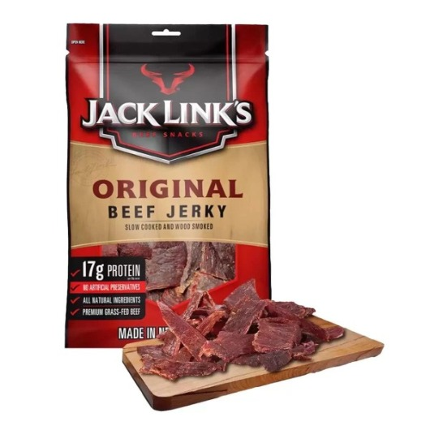
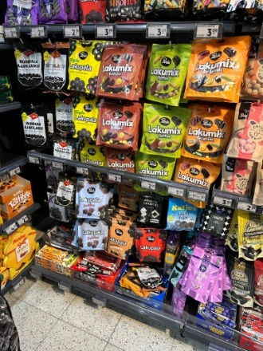
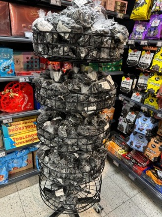
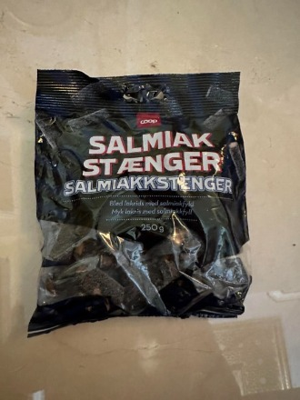
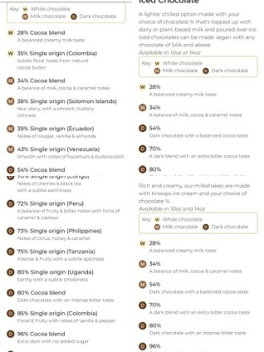
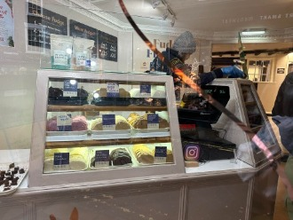

~談談吃喝～
華人在歐洲旅遊，最先開始思鄉的是胃。
這次的北國之旅所經之地（英國 芬蘭 挪威）與我們這種華南地區的飲食偏好相去甚遠，以前年輕時去這類地區，行李都要準備一堆泡麵零食 ，以解腸胃思鄉之苦。
記得我第一次接觸中歐地區的肉製食品（香腸、火腿、培根..）、美國的牛肉乾、中國大陸沒放糖的豬腳…覺得他們怎麼能忍受如此死鹹的食物！？
直到後來聽到德國人來台灣吃到台式口味的香腸，驚訝道肉怎麼是甜的？！來台工作的印尼看護、外勞對台灣之光的蛋黃酥敬謝不敏..中國大陸北方的朋友到台南來趟美食之旅後，納悶地問台南怎所有的食物都是甜點？！對我們大力推薦的「蚵仔煎」、「蚵仔麵線」則是面有難色的咕噥：怎跟鼻涕一樣黏糊糊的…人們對飲食的偏好非常頑固，讓人以為它們是天生的。
因此我們很容易認為口味很大程度上是由遺傳基因所決定的。
沒錯，飲食習慣跟遺傳是有些關係。由於遺傳的原因，例如有的人會對一些味道更敏感，特別是苦味，幾乎大多數人都小時候都不喜歡（這與演化有關，許多毒物味道是苦的），然而卻有人感覺不出苦味。據研究西方約有30%的人無法感知到昂貴的松露香味。有一些人對香菜的味道非常敏感，覺得有股惡心的肥皂味。
我太太吃了青椒，一整天都無法擺脫它的味道….英國科普作家比·威爾遜在其著作《第一口：飲食習慣的真相》中表示基因對飲食偏好的影響其實還是遠不如家庭與文化、記憶與性別、饑餓與情感等後天因素。飲食習慣多數不是天生的，受後天影響要大得多：人在斷奶後，是「選擇」決定了飲食習慣。我們的飲食偏好是會隨著生活環境而變化的，「調整飲食」是可能的。柏林牆倒塌後，東德和西德的家庭主婦們幾十年來第一次吃到對方的食物，東德的主婦們愛上了西德的乳酪，西德的主婦們則喜歡上東德的香草口味的威化餅。雖然所有嬰兒都害怕苦味，但我們卻也能學習愛上苦味的東西：世界上最受歡迎的兩種飲料是咖啡和啤酒，甚至還有不少人喜歡苦瓜！有的人是天生的吃貨，喜歡探索各種美食（像神農氏），但也有更多的人害怕陌生的、奇怪的食物，甚至只是氣味稍有點不對的食物。小孩如果不愛吃蔬菜，要從小就去扭轉，。
據研究培養食物喜好的關鍵時期是1到 3歲，但這也剛好是孩子最不願意嘗試新東西的階段（這可能是人類在野外覓食、防止中毒而進化出來的一種安全機制）。要改變這現象需要對孩子多次餵食，直到讓他明白吃了不會有任何不良後果，一般要多達15次以上才有明顯效果。我自己則是在多次嘗試之後，也逐漸愛上「美國牛肉乾」。
我也認為基因或氣候造成的體質殊異確實會影響口味偏好。去英國、荷蘭、北歐、德國北部這些高緯度國家旅遊時，我注意到有一種暗黑口味的軟糖相當受歡迎，在超市、糖果店隨處可見，而且佔據明顯位置。這是一種八角口味的鹹甘草糖，我第一次吃到這玩意時以為是整人糖果。
我相信對大多數台灣人而言，吃這種在北歐極受歡迎的糖果是一種懲罰。最近我在獵豹餐會上，請每位老師、同仁吃一顆並請他們說說感受，大約6/7的人都用扭曲的表情回答了我，但也有幾位「倖存者」表示還不錯。我觀察了一下，暫時看不出 這糖果的接受度與身高、體重、智商有什麼關聯性（其中一位得過IMO金牌的老師也拒絕再吃第二顆！）我曾想吃下15顆來扭轉對這糖果的看法，嘗試了許多不同的咀嚼方式或用不同角度的含著它，但沒有一種方法能讓我完整地吃下一顆！
以前太太曾送了一包給朋友，聽說她拿去燉豬腳，效果不錯。（糖、八角、上色 一次搞定 聰明！）這種糖果據說也可用於調酒。以下提供大家這種暗黑軟糖在不同國家中的名稱，以免踩雷。芬蘭語：Salmiakki英語：Salmiakk德語：Salmiak/Salzlakritz荷蘭語：Salmiak丹麥語：Salmiak/saltlakrids瑞典語：Salmiak/saltlakrits冰島語：Salmíak/saltlakkrís奇怪的是，兒子Tim對這糖果評價還不錯（應該是繼承母親的體質）。影響口味偏好的體質或許存在不小的遺傳變異，Tim在中國食物堆長大口味卻明顯偏愛西方食物，從小未經任何啟發或暗示竟然超乎尋常地喜愛cheese，從超濃起士的多力多滋到千層麵都是他的最愛。三年前他結束EPFL交換學生時，我們從維也納旅遊到日內瓦。在策馬特時，他興致勃勃告訴我，飯店地下室有間以起士火鍋著稱的餐廳不可錯過。晚餐我們興沖沖地走向地下室，打開餐廳大門的瞬間，一股濃烈的臭襪子味迎面撲來我差點暈死…歐洲的食物對台灣人而言大多偏鹹（兒子的說法是 華人食物添加的味精抑制了鹹味），而甜點又太甜！這次在英國約克鎮逛街時從商鋪買了一塊焦糖口味的Fudge(乳脂軟糖），我們三人各嚐了一小塊，甜得頭皮發麻！這種應該作為甜點原料的玩意，竟然被英國人拿來當甜點！！ 難怪英國近年來過胖人口的增速已是世界前茅。後來這塊Fudge就在我的隨身旅行袋中，旅遊期間喝黑咖啡時剝一小塊加入杯中，直到回台時還剩一半！當然寒冷的地區的人們為了補充熱量，增加糖份攝取是一種必要之惡。我們在芬蘭夜遊森林、挪威雪地上的參觀冰屋時，嚐到那一小杯熱熱的甜果汁時，既美味又振奮精神！說到甜品，KNOOPS位在牛津Turl Street的分店值得一提，這品牌本著工匠精神將各種巧克力飲品（熱巧克力、冰巧克力 與奶昔）依照產地與濃度分類成幾十種！以熱巧克力為例，分成黑、白、牛奶三大類，然後再細分成21種口味。我們分別嚐了70%與54%兩種熱巧克力，味道與香氣都很迷人。（我們將兩種調和了一下 推論60%應是最理想）
後記 太太提醒我 Salmiakki這種鹹甘草糖其實是Liquorice 口味的衍生口味，關於Liquorice的各種衍生口味可參考https://www.snackbear.hk/category/sweet





